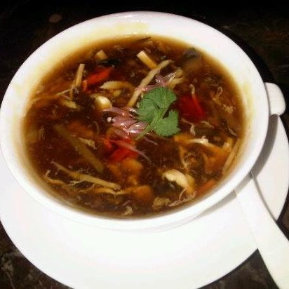

Chicken soup is a comforting and nutritious dish, often enjoyed as a starter or
remedy for colds. It's made by simmering chicken with vegetables, herbs, and spices to create a warm,
flavorful broth. This hearty soup is a wholesome option for any time of the year.
- Chicken (500 grams, with bones)
- Onion (1, chopped)
- Carrot (1, diced)
- Celery (1 stalk, chopped)
- Garlic (2 cloves, minced)
- Bay leaf (1)
- Black peppercorns (6-8)
- Water (4 cups)
- Salt to taste
- Fresh parsley or cilantro for garnish
- In a large pot, add chicken, onion, carrot, celery, garlic, bay leaf, and peppercorns.
- Pour water into the pot and bring it to a boil.
- Lower the heat to a simmer and cook for 30-40 minutes, skimming off any foam that forms on the surface.
- Remove the chicken and shred the meat. Discard the bones.
- Strain the broth to remove the vegetables and spices, leaving a clear soup.
- Return the shredded chicken to the pot with the broth. Adjust salt to taste.
- Reheat the soup if necessary and garnish with fresh parsley or cilantro.
- Serve warm with bread or crackers on the side.